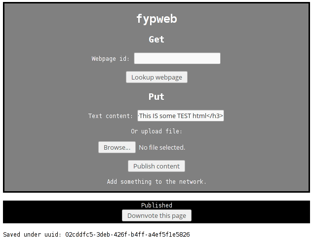

Secure, Anonymous Web-Hosting With Community-Driven Censorship
Scott Cunningham
Background
- Current model of WWW is currently centralised
- Hierarchical: user → ISP → website
- Usual case: single-server website
- Single point of failure
- Susceptible to attack
- Governments blocking access to sites like political blogs, social networks, world news, Wikileaks
Motivations
- Tracking: can trace connections from user → site
- Can snoop on network, guess what websites users access
- Single point of failure: DDoS web servers
- Censorship:
- Ireland and "thePirateBay" [1]
- YouTube, Twitter banned in Turkey [2]
- Censorship controlled by Governments, ISPs - not the users
Goals
-
Publisher anonymity:
Authors of sites should be able to be anonymous. -
Reader privacy:
Users’ browsing should be kept private. -
Secure data storage:
Tamper-proof: If other users hold your data, the system must ensure its integrity. -
Exploit the "linking" nature of the web (remove this?)
Make use of website discovery via referrals from other websites -
Community-driven censorship
Allow the community as a whole to reject websites
Censorship
Censorship worldwide

But is all censorship bad?
- Popular existing solutions aim to completely avoid censorship
- Ian Clarke, "FreeNet" (1999).
- Dingledine, Mathewson, Syverson - "Tor: The second-generation onion router" (2004)
- Can censorship be built into the system design?
- Can we design a system to enable democratic censorship by the users?
How?
Publisher anonymity
- Co-operative hosting
- Publisher does not hold the data
- No identifying information
How?
Secure data storage
- Website random ID used to secure data and find storage location
- Algorithms are irreversible
Demo Walkthrough
- "Frontend", used to illustrate publishing/reading pages
- BASH script to automate startup of the network
- Runs 10 Kademlia nodes locally
- Starts frontend in Firefox
System starting up Starts up other nodes
View of all other nodes connecting to network
View of frontend open in browser

Publish it
Publish confirmation
 We can take this website UUID and use it to retrieve the site laterDemo
Page retrieval
Results from page retrieval
Retrieved from network, decrypted and verifiedDemo
Questions?
Presentation Attributions
-
“High Court orders six Irish internet providers to block The Pirate Bay” - thejournal.ie
-
“Turkey blocks YouTube days after Twitter crackdown” - cnn.com
-
“Censorship worldwide”:
- Based on data from OpenNet research data
- Diagram made by Wikimedia Commons user Jeff Ogden
- Presentation written using Reveal.js